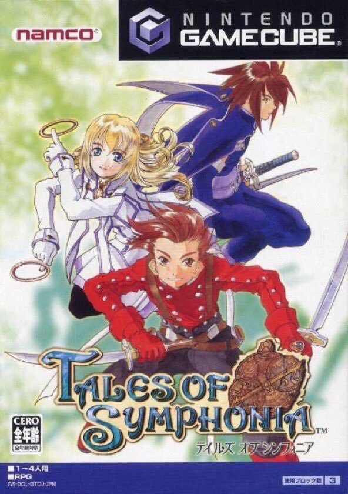

テイルズオブシンフォニア
 2003年8月29日発売プラットフォーム：GC , PS2 , PS3（続編『テイルズオブシンフォニア -ラタトスクの騎士-』との同時収録）
シリーズ第5作目。
敵との遭遇が今までのランダムエンカウント方式からシンボルエンカウント方式に変更された。他にも追加機能はいくつかあるが、本作の特色と言えるものは『好感度』であろう。主人公の行動によって他キャラクターからの好感度が変動し、ストーリー展開が変化するというシステムである。このシステムは以降しばらくマザーシップタイトルでは鳴りを潜めていたが、『テイルズオブイノセンス』、『テイルズオブエクシリア2』で名称を変えて復活することとなる。
本作は第1作目『テイルズオブファンタジア』と同じ世界での出来事を描いており、ワールドマップや人物にその片鱗を見ることが出来る。続編にあたる『ラタトスクの騎士』が存在しているが、そちらはマザーシップタイトルではなくエスコートタイトル扱いになっている。（外伝のような位置づけなのだろうか？）